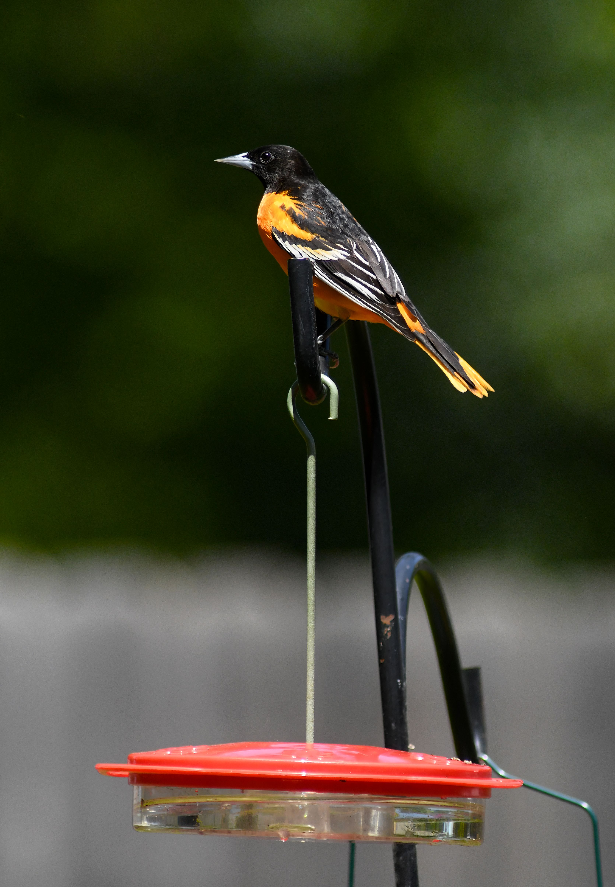

The Baltimore Oriole is a colourful North American blackbird. Adult males have bright orange underparts with black upperparts and wings, while females are generally more yellow-orange and brown. It spends much of its time in mature trees, searching among leaves for insects and feeding on fruit and nectar.
Baltimore Oriole is best separated from Orchard Oriole by looking at the overall shape and the strongest plumage pattern rather than one small mark. Compared with Orchard Oriole, it has a different combination of colour, proportions and typical behaviour, which becomes clearer when the whole bird is visible. Scarlet Tanager can also resemble it in some settings, but differences in bill shape, tail length, wing pattern, posture or habitat can help narrow the identification. Calls and behaviour are useful supporting clues when plumage is difficult to see, especially for birds that spend much of their time in dense vegetation. Using several features together is more reliable than identifying the bird from a single characteristic.
IOC World Bird List v15.2 — taxonomy and nomenclature, IUCN Red List of Threatened Species — global conservation status, BirdLife International — species distribution, ecology and conservation, eBird / Cornell Lab of Ornithology — identification and life-history information